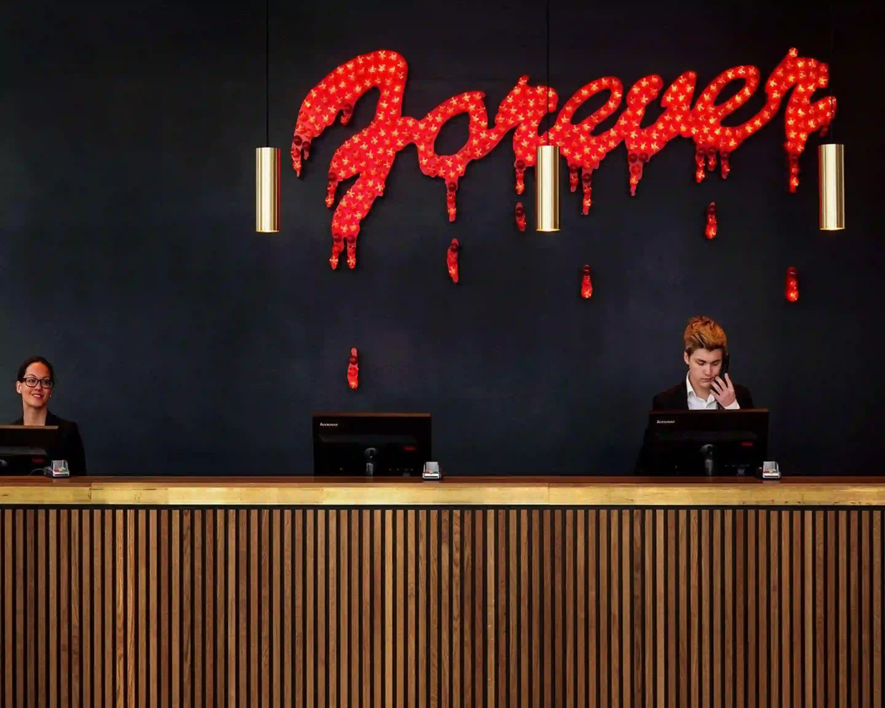

Del 2
Lappen
Mias larm går, några åtta timmar blev det inte men obehaget från natten innan känns aningen mer distant. Jonathan och Camilla skulle ta en lugn förmiddag så han behöver inte henne förrän den dagliga lunch avstämningen. Hon har lite tid att kolla över sina scheman, äta frukost och se sig omkring lite.
Stegen är tunga genom korridorerna, hennes tankar känns stilla. Hon observerar löst de andra som vandrar genom korridorerna, en kvinna slinker ut genom dörren till ett hotellrum, från hennes kläder konstaterar Mia att hon är en städerska på hotellet. Hennes rufsiga mörka hår rättas snabbt till, de sista knapparna på hennes blus knäpps, hon möter Mias blick, ler lite stelt och skyndar sig iväg. Dörren hennes gestalt tidigare dolt bär numret 314.
Dörrarna öppnas till ett sorl av röster som blandas med lukten av kaffe.


Mia låter blicken svepa över restaurangen och får syn på ett bord vid fönstret. Där sitter Jonathan, mannen hon arbetat för de senaste åren, och kvinnan vid hans sida Camilla med sin stora diamantring på vänstra handen som hon håller champagne glaset i. Camilla lutar sig fram och viskar till Jonathan samtidigt som hon ger ett stelt leende mot honom, ett leende man använder när man är van vid kameror, intervjuer och dyra middagar där tystnad är ett vapen. Mellan dem finns en närhet, men kroppsspråket är spänt, som om varje rörelse bär på något outtalat. Något för tyst för att höras, men för tydligt för att missförstås.
Vera betraktar dem en stund. De märker henne inte.
"Du kunde ha låtit mig veta," säger Camilla lågt, utan att se på honom.

Camilla
Jonathan suckar, långsamt, och svarar först efter några sekunder: "Jag trodde inte det var nödvändigt."

Jonathan
"Nej, det gör du ju sällan." Hon snurrar långsamt på glaset mellan fingrarna. "Men det finns en skillnad mellan att inte säga allt och att medvetet låta bli."
Han lutar sig fram, rösten spänd. "Det var inget. Det var jobb."
"Jag vet exakt vad jag ser, Jonathan." Hon lutar sig tillbaka, leendet tunt och farligt. "Du är bara sämre på att dölja det än du tror."
Jonathan suckar djupt och vänder sig bort från Camilla, hans blick vänder sig ut mot restaurangen som om han försöker hitta en väg ut ur samtalet. Plötsligt får han syn på Mia som står vid ingången. Jonathan gestikulerar för att få hennes uppmärksamhet, då snabbar sig Mia till deras bort för att se vad han har att säga.
"Kan du göra mig en tjänst? Jag har lämnat något i receptionen - det ligger där i mitt namn." Han räcker över ett nyckelkort tillsammans med en kort nick, innan han vänder sig tillbaka mot Camilla, som tyst betraktar hela situationen.
Mia går fram till receptionsdisken och säger Jonathans namn. Receptionisten nickar kort och försvinner bakom en dörr, för att några ögonblick senare komma tillbaka med ett tunt kuvert.

Kära läsare.
Du ska nu gå fram till
receptionen och säga att du ska:
"checka in på
The
White
Lotus".
Mia tar emot det, går åt sidan och öppnar det med en blandning av nyfikenhet och tvekan. Inuti ligger några till synes ointressanta papper, men när hon vänder på dem faller en ihopvikt lapp ur kuvertet och landar på golvet. Hon böjer sig ner för att plocka upp den - först tänker hon strunta i det, men just när hon ska slänga tillbaka den i kuvertet ser hon något. Ett hjärta, slarvigt ritat i hörnet.
Mia stirrar på lappen. Något i hennes inre håller henne tillbaka från att stoppa undan den. Det är något med den där hastigt nedklottrade handstilen som skaver - den är inte Camillas, det är hon säker på. Mia viker lappen försiktigt och stoppar ner den i innerfickan. En vag känsla av obehag gör sig påmind - något är inte som det ska.

Du står inför första prövningen. En gåta väntar - lös den, så öppnas vägen framåt.
1. Du ska ha hämtat ut kuvertet från receptionen.
2. Lappen i kurvertet guidar dig till nästa destination.
3. Koden för nästa del finns i meddelandet...
(S - R - O)
([S - R - B])